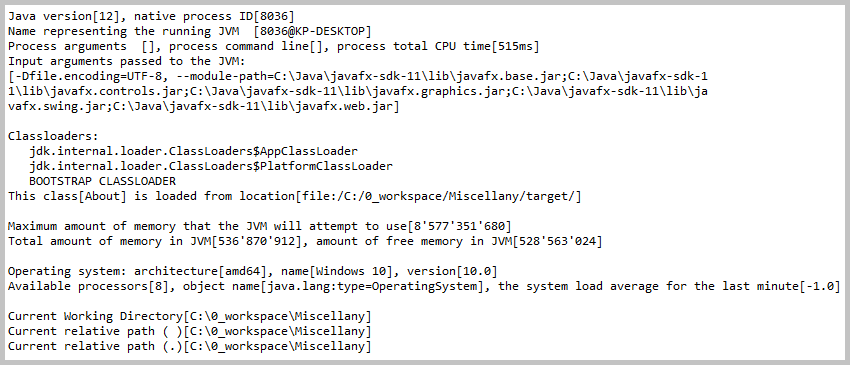
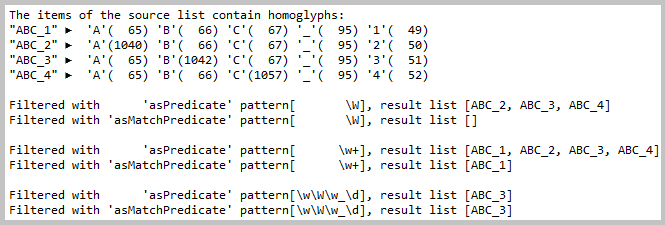

Java source code:

 a.latest.java
a.latest.java
kp.files
kp.methods
kp.processes
kp.reactive.streams
kp.regex
kp.web
Action:

 Launch application with
a.latest.java.LatestJava.main()
Launch application with
a.latest.java.LatestJava.main()
1.1. Class a.latest.java.subjects.About
Console log from 'About.showElapsed()' method.
Console log from 'About.listSystemProperties()' method.

Console log from 'About.showEnvironment()' method.
Console log from 'About.showFileStores()' method.
1.2. Class a.latest.java.subjects.ArrayAndCollection
Console log from 'ArrayAndCollection.showArraysMismatch()' method.
Console log from 'ArrayAndCollection.multidimensionalArrayToMultidimensionalList()' method.
Console log from 'ArrayAndCollection.apportionSet()' method.
Console log from 'ArrayAndCollection.apportionMapAndMerge()' method.
Console log from 'ArrayAndCollection.iterateOverVector()' method.
1.3. Class a.latest.java.subjects.DateAndTimeAggregation

Console log from 'DateAndTimeAggregation.aggregateLeapDays()' method.
Console log from 'DateAndTimeAggregation.aggregateOneYearSeconds()' method.
1.4. Class a.latest.java.subjects.DateAndTimeChanging
Console log from 'DateAndTimeChanging.formatDate()' method.
Console log from 'DateAndTimeChanging.convertDateToAndFro()' method.
Console log from 'DateAndTimeChanging.adjustDate()' method.
Console log from 'DateAndTimeChanging.queryTemporalObjects()' method.
Console log from 'DateAndTimeChanging.calculateAmountOfTimeBetween()' method.

Console log from 'DateAndTimeChanging.addToOrSubtractFromInstant()' method.
Console log from 'DateAndTimeChanging.fragmentizeTime()' method.
1.5. Class a.latest.java.subjects.ExecuteTasks

Console log from 'ExecuteTasks.futureWithGivenExecutor()' method.
Console log from 'ExecuteTasks.launchCompletableFutures()' method.

Console log from 'ExecuteTasks.completeSingleStageWithDependencies()' method.
Console log from 'ExecuteTasks.completeEitherOfTwoStages()' method.
Console log from 'ExecuteTasks.completeBothOfTwoStages()' method.
Console log from 'ExecuteTasks.safeFuture()' method.
Console log from 'ExecuteTasks.invokeCallableTasksCollection()' method.
Console log from 'ExecuteTasks.executeFutureTasks()' method.
Console log from 'ExecuteTasks.executeRunnablesAndCallables()' method.
Console log from 'ExecuteTasks.usePhaserToOpenGateForTasks()' method.
Console log from 'ExecuteTasks.usePhaserToAwaitOtherTasks()' method.
1.6. Class a.latest.java.subjects.Parallelism
Console log from 'Parallelism.joinedStreams()' method.
1.7. Class a.latest.java.subjects.SortingObjects
Console log from 'SortingObjects.sortStream()' method.
Console log from 'SortingObjects.sortStreamWithLocale()' method.
Console log from 'SortingObjects.sortArray()' method.
Console log from 'SortingObjects.sortMapByKeyOrByValue()' method.
Console log from 'SortingObjects.sortWithComparableAndComparator()' method.
1.8. Class a.latest.java.subjects.StreamCollecting
Console log from 'StreamCollecting.peekInStreamAndCollect()' method.
Console log from 'StreamCollecting.groupByDifferenceFromExpected()' method.
Console log from 'StreamCollecting.sourceListModifiedBeforeTheTerminalCollect()' method.
Console log from 'StreamCollecting.streamOfOptionals()' method.

Console log from 'StreamCollecting.createStreamFromNull()' method.
Console log from 'StreamCollecting.iterativeStream()' method.
Console log from 'StreamCollecting.traverseList()' method.
Console log from 'StreamCollecting.traverseQueue()' method.
Console log from 'StreamCollecting.traverseDeque()' method.
Console log from 'StreamCollecting.multidimensionalToFlat()' method.
Console log from 'StreamCollecting.nullsInStreamWithoutOptionals()' method.
Console log from 'StreamCollecting.nullsInStreamWithOptionals()' method.
1.9. Class a.latest.java.subjects.StreamFragmentation
Console log from 'StreamFragmentation.skipAndLimit()' method.
Console log from 'StreamFragmentation.dropAndTake()' method.
Console log from 'StreamFragmentation.filter()' method.
1.10. Class a.latest.java.subjects.StringProcessing
Console log from 'StringProcessing.countLetterFrequency()' method.
Console log from 'StringProcessing.useStringJoiners()' method.
Console log from 'StringProcessing.getResultsWithStringProducer()' method.
1.11. Class a.latest.java.subjects.Var
Console log from 'Var.launch()' method.
Action:
Launch application with
kp.files.MainForFiles.main()
2.1. Class kp.files.FilesAndZipFiles
Console log from 'FilesAndZipFiles.readFiles()' method.
2.2. Class kp.files.PropertyFiles
Console log from 'PropertyFiles.readProperties()' method.
2.3. Class kp.files.TemporaryFilesAndZipFiles
Console log from 'TemporaryFilesAndZipFiles.writeAndReadTemporaries()' method.
2.4. Class kp.files.XmlFiles
Console log from 'XmlFiles.readXmlFile();
2.5. Class kp.files.impl.SimpleFileVisitorExtension
Console log from 'SimpleFileVisitorExtension.searchKeywordsInFiles()' method.
Action:
Launch application with
kp.methods.MainForMethods.main()
3.1. Class kp.methods.arity.Arity

Console log from 'Arity.methodWithFiveFunctionParameters(...)' method.
Console log from 'Arity.methodWithConsumerParameter(...)' method.

Console log from 'Arity.methodWithFunctionParameter(...)' method.
3.2. Class kp.methods.calling.Contrasting
Console log from 'Contrasting.usingLocalClassVersusAnonymousClassVersusLambdaExpression()' method.

Console log from 'Contrasting.lambdaAccessingVersusCallingDirectly()' method.
3.3. Class kp.methods.composing.FunctionComposer
Console log from 'FunctionComposer.composeFunction()' method.
3.4. Class kp.methods.functional.TheFunctionalInterface
Console log from 'MainForMethods.launchTheFunctionalInterface()' method.
3.5. Class kp.methods.invoking.FindHandleAndInvoke

Console log from 'FindHandleAndInvoke.invokeObjectMethods()' method.
Console log from 'FindHandleAndInvoke.invokeFirstSetterThenGetter()' method.
Console log from 'FindHandleAndInvoke.replaceArrayElement()' method.
3.6. Class kp.methods.proxy.ProxyAndInvoke
Console log from 'ProxyAndInvoke.invokeMethod()' method.
Action:
Launch application with
kp.processes.MainForProcesses.main()
4.1. Class kp.processes.MainForProcesses
Console log from 'MainForProcesses.main(...)' method.
Action:
Launch application with
kp.reactive.streams.MainForReactiveStreams.main()
5.1. Class kp.reactive.streams.MainForReactiveStreams
Console log from 'MainForReactiveStreams.launchSubscriberImpl()' method.
Console log from 'MainForReactiveStreams.launchPeriodicPublisher()' method.
Console log from 'MainForReactiveStreams.launchProcessorImpl()' method.
Console log from 'MainForReactiveStreams.launchPublisherImpl()' method.
5.2. Class kp.reactive.streams.WebWithSubscribers
Console log from 'WebWithSubscribers.receiveResponseUsingLineSubscriber()' method.
Console log from 'WebWithSubscribers.receiveResponseUsingListSubscriber()' method.
Console log from 'WebWithSubscribers.receiveResponseUsingPublisher()' method.
Action:
Launch application with
kp.regex.MainForRegex.main()
6.1. Class kp.regex.MainForRegex

Console log from 'MainForRegex.showGreedyReluctantPossessiveQuantifiers()' method.
Console log from 'MainForRegex.showNamedCapturingGroups()' method.
Console log from 'MainForRegex.filterStreamWithMatchedRegexPredicate_1()' method.
Console log from 'MainForRegex.filterStreamWithMatchedRegexPredicate_2()' method.

Console log from 'MainForRegex.filterStreamWithPatternPredicates()' method.
Console log from 'MainForRegex.replaceAllWithMatcherInSingleLine()' method.
Console log from 'MainForRegex.replaceAllWithMatcherInMultiline()' method.
Console log from 'MainForRegex.appendReplacementWithMatcher()' method.
Console log from 'MainForRegex.splitTokenizing()' method.
Console log from 'MainForRegex.scannerTokenizing()' method.
Action:
Launch application with
kp.web.MainForWeb.main()
Launch only one of three possibilities: or 'Sockets', or 'HTTP Client', or 'HTTP Server'.
7.1. Class kp.web.sockets.SocketsLauncher
Console log from 'SocketsLauncher.processLoop(INSECURE)' method.
Console log from 'SocketsLauncher.processLoop(SECURE)' method.
7.2. Class kp.web.httpclient.ClientLauncher
Console log from 'ClientLauncher.readSynchronously()' method.
Console log from 'ClientLauncher.readSynchronouslyNotFound()' method.
Console log from 'ClientLauncher.readAsynchronously()' method.
7.3. Class kp.web.httpserver.ServerStarterAndDesktopLauncher
The web server is started on http://localhost:8080/. The web browser is started.
Action:
Launch batch file
03 Batch Menu.bat